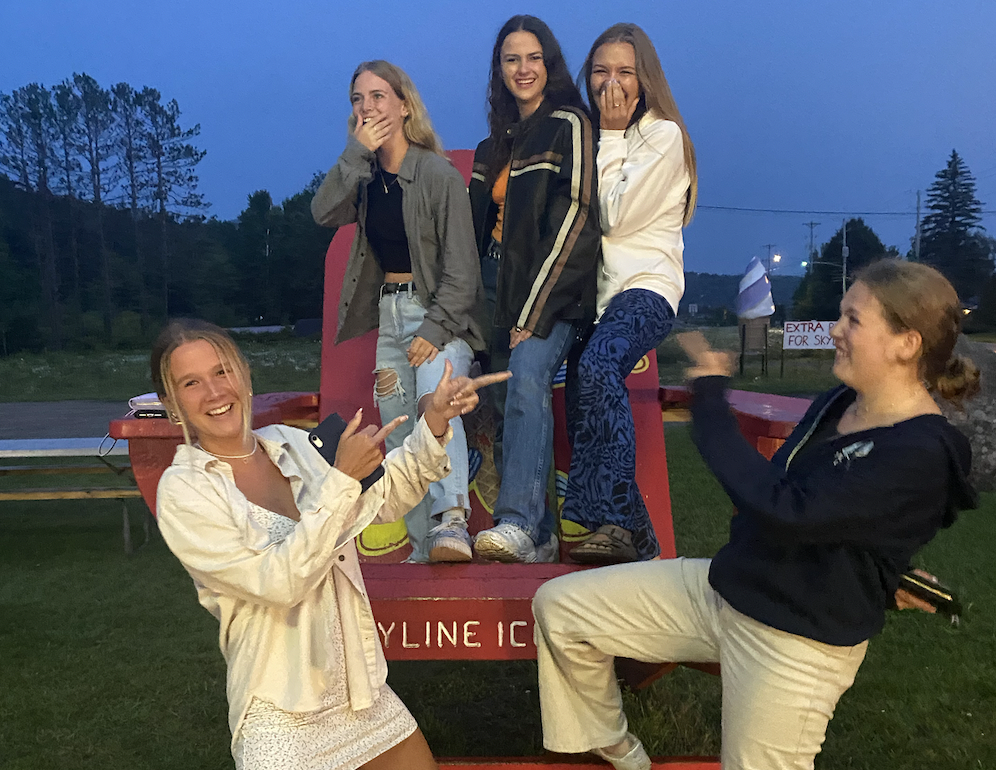

Meet My Friends
Hometown
I have a group of friends I have been friends with since I was a young child. I am the youngest and my sister is the oldest in the group. The the ages currently range from 19-22. It's fun being the youngest because they are all like older sisters to me. All of our parents met when we were young and so, for the most part, we grew up together. This a picture of all of us in Saranac, NY, where we go every summer together for a week. They are all wonderful women and their names are: Helen (bottom right), Sadie (top left), Jess (top middle), and my older sister Lilly (top right).
Music is a huge part of my life, especially within this friend group. I have noticed that between each of my friend groups there are genres of music I associate with each of them. This is a song that my hometown friends and I listen to whenever we are all together and somehow, we've never gotten sick of it.
High school
I found some of my greatest friends in high school. My two best friends are named Darby and Sav. The picture below is a picture of us at our high school graduation. I met Sav and Darb freshman year through the varisty soccer team where we immediately clicked. We played varsity soccer and varsity lacrosse all throughout highschool and Sav was my co-captain our senior year in lacrosse. Darby goes to the University of Miami now and Sav goes to the University of Maryland - both of them are very happy with the colleges they chose.
Another one of my best friends from high school is named Michael, we've been great friends since we were 14 and I still look forward to seeing him when I go home for break. He is currently playing baseball at Bard University but he is considering transferring. Michael is a great guy and if I ever need someone to call to go on an adventure with, I call Mike!
The picture below is me with my two great friends Brooks and Rob - they are the funniest people I have ever met and I have been friends with them since I was 14. In highschool Brooks's father was not only the head of school, but also my father's best friend (and still is). Rob is a very charasmatic person, he can get anything he wants just through his charm. They are in the grade below me so I was able to go to their graduation last year and then send them off to college! Rob is currently at Syracuse and Brooks is playing lacrosse at Tufts.
College
I got lucky when it came to finding friends in college. My two best friends are named Elizabeth and Amber. Amber is from Charlottesville, VA, and Elizabeth is from Toronto, Canada - this makes it difficult to see eachother when we all go home for breaks. We have a larger group of friends that includes Barney, Sam, Alan, and AJ. We all spend a lot of time together, and the boys always come to our apartment when they are hungry. The picture on the right is all of us together, it was taken before we went to a ball.
Meet My Family
Sisters
These are my three sisters who are my world. My oldest sister's name is Lilly, in the green shirt, and she is 22. She is about to graduate from a teaching special ed program at University of Connecticut and she works as a nanny for three different families.

Then there's Cecilia, who we call Ceec, and she is 17 - she is my best friend in the whole entire world. Finally, the youngest is Charlotte, we call her Chach or Booms, and she is 15. She is the tallest sister, which is funny because she is the youngest. She is a great athlete and a very good runner. My little sisters are my prized posession and I love spending time with them - it is sad that they are growing up so fast. I don't see my older sister as much because she is 22 and has a very busy schedule.
Parents
My parents are wonderful. They have always inspired me and encouraged me to be the best version of myself. My mother's name is Shira - she was born in Ireland and grew up in London. She is the smartest person I have ever met and whenever I need advice I go to her.
My dad's name is Allen - he was born in Chicago and lived in Princeton, NJ for the first three years of his life, while his parents finished up their degrees at Princeton University, then he moved to Darien, CT, and shortly after Devon, PA. HiHe is head of the Board of Trustees at Wooster School. He is such an insipiration to my whole family and all of our friends because he was battling cancer for a couple years but he is currently in remission!
This song will forever remind me of my dad. He always says thaty two life changing things happened in the year of 2003 - I was born and this song was released. For as long as I can remember he has always blasted thing song in the car when we were on our way to the beach, he also has a ridiculous dance to accompany it.
Dogs
My two dogs are named Kipper, we call him Kippy, and Angus, we call him Goose or Goosey. My family got kipper when I was 3, so he is 16 years old now. We got Angus when I was 13 so he is 6 now, but he still acts like he's a puppy.